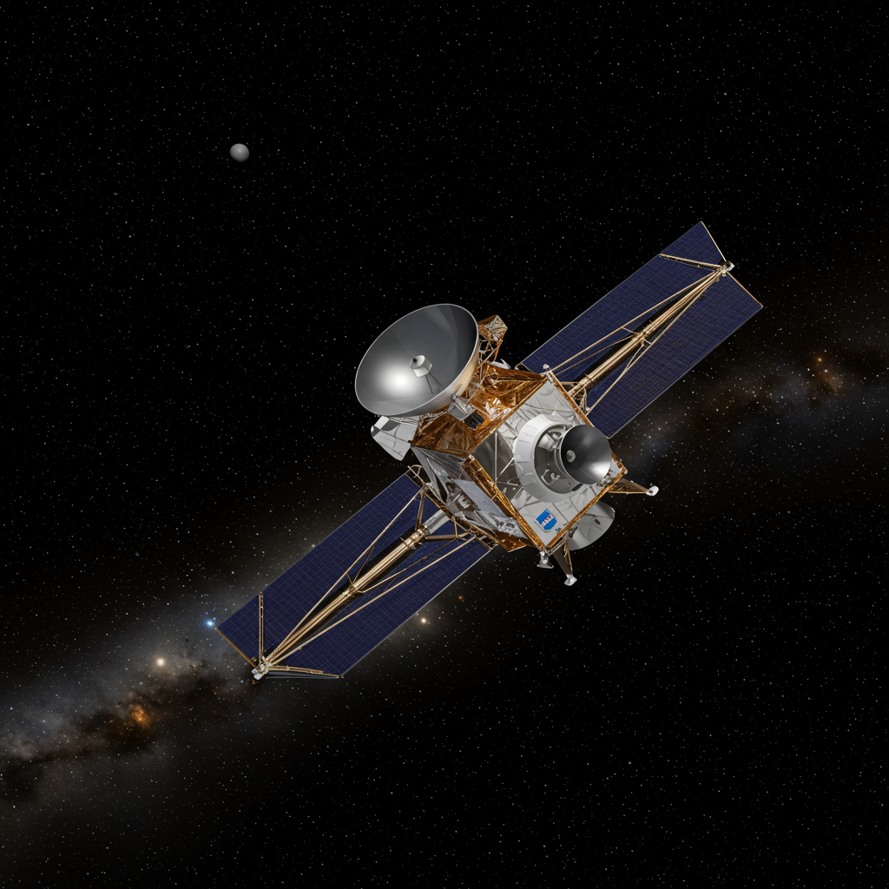

Fermi Gamma-ray Space Telescope
Agencia: NASA
Fecha de lanzamiento: 11 de junio de 2008
Duración de misión: Operativa (más de 15 años en servicio)
Tipo de misión: Telescopio espacial de rayos gamma
Objetivo: Estudiar fenómenos de alta energía del universo como púlsares, agujeros negros, brotes de rayos gamma y materia oscura
Carga científica: Gran Telescopio de Área (LAT) y Monitor de Explosiones de Rayos Gamma (GBM)
Significado del nombre
El telescopio lleva el nombre de Enrico Fermi, físico italiano pionero en la física nuclear y en la teoría de partículas. Su legado en la comprensión de procesos de alta energía inspira el objetivo de la misión: investigar los fenómenos más extremos del cosmos en rayos gamma.
Impacto histórico
Fermi ha revolucionado la astronomía de rayos gamma. Ha descubierto miles de fuentes gamma, monitoreado estallidos cósmicos, mapeado la Vía Láctea en alta energía y contribuido a estudios sobre la materia oscura. Sus datos son fundamentales para la astrofísica contemporánea.
Estado actual
Activo y operativo. Continúa recolectando datos científicos con excelente desempeño. NASA ha prolongado su misión varias veces debido a la demanda de datos y la buena salud de sus instrumentos.